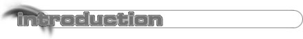

|
|
 |
 |
 
The Scene Archive, a web site who's goal is to document the pass for the future. When I first had the idea for this page over a year ago many of my friends thought it was a brilliant idea but never thought it would happen. The idea that someone would try to document the old and very secretive PC cracking scene was understandably absurd. Well here we are one year later and so many things on the internet has changed (as they do). Now fortunately for me, retro is slowly coming back. Emulation, abandoned warez, etc. are just some examples. And because of this old school trend, accessing the resources I need for a page like this has become a lot easier. The original idea for this site was to create a massive archive of old scene memorabilia, but now that I look back on this idea I find that it is now obsolete. Today the site's goal has change, today it is here to document the scene's past rather then just to archive it. Now we may not be the first old PC scene site in the world but I believe we are the first and only site to try and completely document the old PC scene. Because of this I hope this site can work more closely with the scene resource sites to bring our users the most comprehensive and accurate information available. I must give thanks to all of the many contributors to this site including Bk, Cybacolt, Devotion, Ek, Lek, Mead, Neofish, Strooper, Pst, Saint Tok, Aldog and Toast. On a final note I am sure you have noticed there are a few commercial banners on The Scene Archive's pages. You may even think we are making a lot of money from these banners, or that this site is here for the soul purpose of creating money. Both of these statements are false, in fact The Scene Archive looses money and if it were a business it would be bankrupt. The commercial banners are only there to help lower the financial burden of running this site while the non commercial banners are still shown for free. , August 1998. |
| The Scene's History | ||
| An Essay On The Scene | - Documents the scene right up to the ISO scene | |
| Bentley Sidewell Protections | - Famous Houston group from the eighties | |
| Class | - The number one group today | |
| Drink or Die | - Warez bears from Russia | |
| Fairlight | - Got their name from a Spectrum game | |
| Firm, The | - Lasted eight years from 1986 till 1994 | |
| International Network of Crackers | - Dominated the early PC scene until THG came along | |
| Motiv8 | - One of the oldest surviving courier groups | |
| Razor 1911 | - Was a major force during the mid-90's | |
| Rebels | - Founded in 1984 but only recently moved to the PC | |
| Siege | - Once known as RISC's utility division | |
| Sodom | - Another Russian utility group | |
| The Grand Council | - An early eighties cracking group based in Detroit | |
| United Software Association | - Soon merged into Fairlight before a split then died | |
| Crack/Intro Collection | ||
| Index | - Over 175 cracktros listed and download-able | |
| Electronic Magazines (Emags) | ||
| General | - Rediscover those classic magazines | |
| Defacto | - What went on behind the scenes at Defacto | |
| Flaming Files | ||
| Index | - Some are funny others are just sick | |
| Viewable NFOs | ||
| Index | - A selection of NFO's taken from Toast's collection | |
| Bulletin Board Systems | ||
| Adverts | - Trip into nastalga with these ansi and coded ads | |
| Area Codes | - All the major international area codes listed | |
| The Trainer Scene | ||
| Index | - Jammer's collection with over 300 trainers | |
| 10 Years of PC Games | ||
| Index | - Game List Index Page | |
| 1982-1984 | - Most games where conversions from other formats | |
| 1985-1996 | - Mainly conversions from other formats | |
| 1987 | - The first Sierra AGI game, plus many classic titles | |
| 1988 | - The first sound cards are supported | |
| 1989 | - VGA and Adlib become common (for the rich) | |
| 1990 | - The PC for the first time shows its technical dominance | |
| 1991 | - Remember the crappy, desynched game introductions | |
| 1992 | - Flight sim heaven was this year. | |
| Scene Links | ||
| Text Links | - You need more information, try these links | |
| Banner Links | - Scene links with their banners | |
| Message Board | ||
| Index | - Leave messages with fellow scenites | |
|
Updated the main menu so all pages are linked from here |